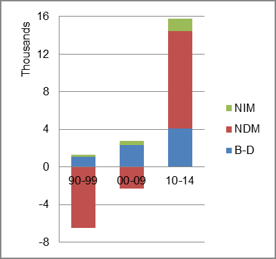
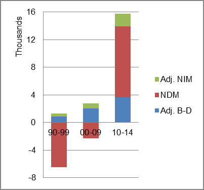

The foreign-born (FB) population decreased from 29,907 in 1960 to 16,639 in 2010. That was a decrease of 44.4 percent. The foreign-born share changed from 4.7 percent to 2.5 percent.
The share of the overall population that was native-born (NB) increased by 8.9 percent.
North Dakota: Population 1960-2010
The first chart below shows the three population factors for three periods adjusted for annual average amounts. Natural change (B-D) was the factor adding the most population in the first two periods with NDM in that role in the most recent period.
The second chart shows the same data but with an adjustment to reflect births to immigrants shifted to NIM. In it, the relative positions of the factors were similar in adding and subtracting population.
North Dakota: Sources of Population Change 1990-2014 North Dakota: Sources of Population Change (Adjusted) 1990-2014  
B-D NDM NIM B-D NDM NIM 90-'99 82.3% neg. 17.7% 90-'99 64.3% neg. 35.7% 00-'09 83.5% neg. 16.5% 00-'09 72.8% neg. 27.2% 10-'14 26.1% 65.6% 8.4% 10-'14 23.2% 65.6% 11.3%